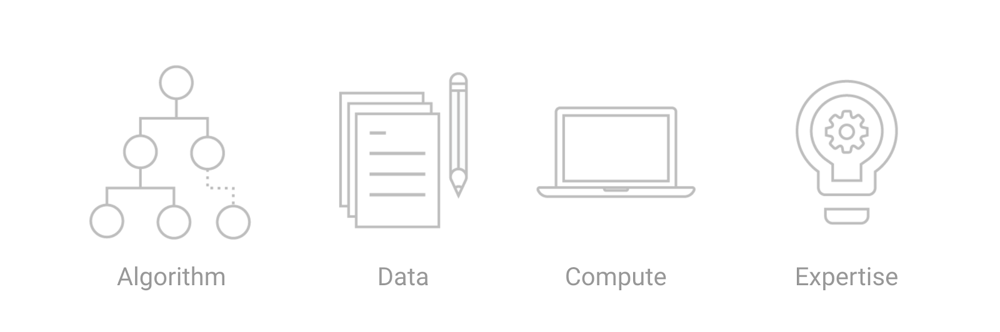

Montréal.AI Web — The Dawn of Artificial Intelligence
Artificial Intelligence for the Web : Converting AI Research into Commercial Successes.
At the forefront of AI, deploying superhuman agents that can learn from experience in the browser unlocks new powerful possibilities to apply AI in ways we never thought of! E.g., on a mobile device, the autonomous agent can leverage sensor data (i.e.: gyroscope or accelerometer) and take actions. True understanding comes from agents that learn by “seeing” how they affect the world.
All data stays on the client, making AI agents in the browser useful for privacy preserving applications.
“ Artificial Intelligence is about recognising patterns, Artificial Life is about creating patterns. “
— Mizuki Oka et al, #alife2018
A Proof of Concept : Getting Alexa to Respond to Sign Language
Using TensorFlow to make an Amazon Echo respond to sign language, by M. A. Singh :
- Blog Post by by M. A. Singh
- Code for the Proof of Concept on GitHub
Advanced and Impactful Open-Source Technologies
Bringing contributions by scholars recognized as the foremost authorities in their fields, Montréal Artificial Intelligence is ahead of trends that will profoundly influence the future of Humanity.
Cutting edge open-source technologies proudly used :
1. TensorFlow.js
Training and Deploying ML Models in the Browser
TensorFlow.js uses flexible and intuitive APIs to build and train models from scratch using a low-level JavaScript linear algebra library or a high-level layers API. The TensorFlow.js model converters allows running pre-existing TensorFlow models right in the browser or under Node.js. Pre-existing ML models can be retrained using sensor data connected to the browser, or other client-side data. Three development workflows :
Importing an existing, pre-trained model for inference ;
Re-training an imported model quickly (transfer learning) with only a small amount of data ; and
Authoring (define, train, and run) models directly in the browser.
TensorFlow.js AI agents can be trained using reinforcement learning, neuroevolution, or other machine learning methods. There’s no need to install anything. Just open a webpage, and your AI Agent is ready to run.
References :
- TensorFlow.js
- TensorFlow dev summit Official TensorFlow.js Launch
- Introducing TensorFlow.js by Josh Gordon and Sara Robinson
- Deep Learning in JS - Ashi Krishnan - JSConf EU 2018
- TensorFlow.js Gallery
2. Reinforcement Learning
Going Beyond Input-Output Pattern Recognition
In the past few years deep reinforcement learning started achieving state-of-the-art results.
“ Reinforcement learning (RL) is the subfield of machine learning concerned with decision making and motor control. It studies how an agent can learn how to achieve goals in a complex, uncertain environment. “ — OpenAI
At the bleeding edge of AI, autonomous agents can learn from experience, simulate worlds and orchestrate meta-solutions. Here’s an inspiring example of a high-quality implementation of a reinforcement learning algorithm :
Powerful and useful application domains :
Dialogue, Healthcare, Management, Robotics, Smart Grid, Supply Chains, etc.
“ Self-Play is Automated Knowledge Creation. “ — Carlos E. Perez
References :
- OpenAI Gym by OpenAI
- OpenAI Baselines by OpenAI
- AlphaGo Zero: Learning from scratch by DeepMind
- A Visual Guide to Evolution Strategies by David Ha
- OpenAI Five by OpenAI
3. TensorFlow Hub
Reusing Machine Learning Modules
TensorFlow Hub is a library for the publication, discovery, and consumption of reusable parts of machine learning models. A module is a self-contained piece of a TensorFlow graph, along with its weights and assets, that can be reused across different tasks in a process known as transfer learning. Transfer learning can:
Train a model with a smaller dataset ;
Improve generalization: and
Speed up training.

“ I think transfer learning is the key to general intelligence. And I think the key to doing transfer learning will be the acquisition of conceptual knowledge that is abstracted away from perceptual details of where you learned it from. “ — Demis Hassabis
- TensorFlow Hub
- Introducing TensorFlow Hub by Josh Gordon
Transform your Web Site with an AI Agent
Fully-fledged AI systems can achieve serious revenue!
Montréal Artificial Intelligence helps to transform Web sites for the age of artificial intelligence by developing machine learning agents in the browser that achieves goal-oriented behavior.
Demos :
- Solving the cart-pole control problem in the browser using the policy-gradient method
- Live demo : https://storage.googleapis.com/tfjs-examples/cart-pole/dist/index.html
- Code : https://github.com/tensorflow/tfjs-examples/tree/master/cart-pole
- Predicting balls and strikes using TensorFlow.js

- Animation with CPPNs and TensorFlow.js, an @observablehq notebook by Emily Reif
- @observablehq notebook by Emily Reif : https://beta.observablehq.com/@emilyreif/animation-with-cppns
- Move Mirror: An AI Experiment with Pose Estimation in the Browser using TensorFlow.js
- By Jane Friedhoff and Irene Alvarado : https://medium.com/tensorflow/move-mirror-an-ai-experiment-with-pose-estimation-in-the-browser-using-tensorflow-js-2f7b769f9b23
- L1: Tensor Studio — An in-browser live-programming environment by Milan Lajtoš
- Live demo : https://mlajtos.github.io/L1/latest/
- Github : https://github.com/mlajtos/L1
References :
- Unity ML-Agents Toolkit by Unity
- A Brief Survey of Deep Reinforcement Learning Arulkumaran et al.
“ Nothing is more powerful than an idea whose time has come. “ — Victor Hugo
MontreÃÅal.AI is offering a new world age of impactful technical prowesses on an unprecedented scale.
To order your AI Agent :
✉️ Email Us : info@montreal.ai
üìû Phone : +1.514.829.8269
üåê Website : http://www.montreal.ai/
üìù LinkedIn : https://www.linkedin.com/in/montrealai/
üèõ Headquarters : 350, PRINCE-ARTHUR STREET W., SUITE #2105, MONTREAL [QC], CANADA, H2X 3R4 *Administrative Head Office
#AIFirst #MontrealAI #MontrealArtificialIntelligence